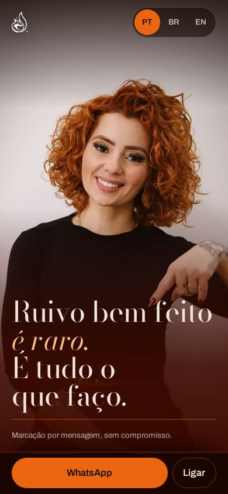
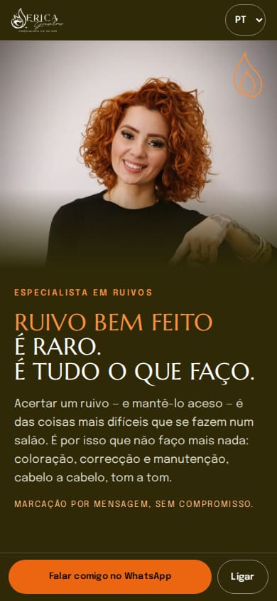
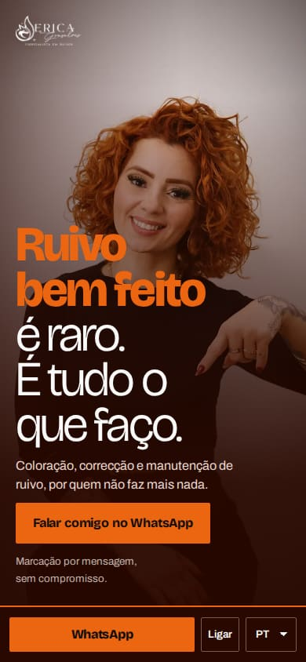
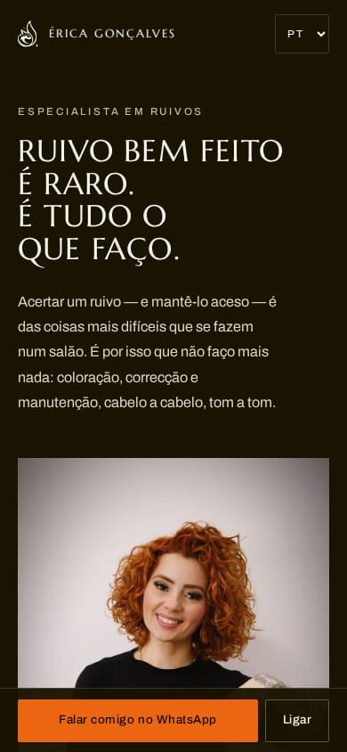
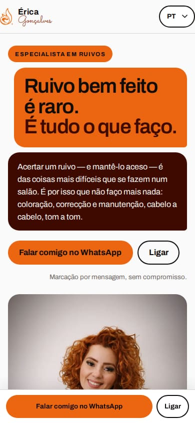

Érica — cada link abaixo é um site inteiro, a funcionar, no telemóvel e no computador. O mesmo conteúdo e a mesma marca; dez maneiras diferentes de te apresentar.
Abre, rola até ao fim, e diz-me qual é a tua. Dá para misturar: “gostei do início da 2 com a galeria da 3”.
Laranja da marca a cobrir o ecrã e a fotografia a sangrar de cima a baixo. Condensada, alta, impossível de ignorar.

V2Quase-preto queimado, luz de salão à noite. A tua fotografia fica fixa ao lado enquanto o conteúdo passa.
O site é a carta de cores. Escolhe-se um tom e a página inteira responde — trabalhos, descrição e contacto.

V4A chama-raposa do logótipo conduz a página, desenhada em traço e em movimento. Oliva, quente, artesanal.
Claro, arejado e organizado. Uma grelha calma onde as fotografias fazem todo o barulho.

V6Tipografia enorme e frases curtas sobre laranja chapado. Poucas fotografias, todas gigantes.
Faixas de fotografias em movimento contínuo, como uma montra. O trabalho passa; o contacto fica.

V8Oliva escuro, muito ar e poucas coisas — a versão silenciosa. Elegância sem gritar.

V9Desenhada como uma conversa no telemóvel: as dúvidas em balões, a resposta na tua voz, o WhatsApp à mão.
Blocos de cor chapada e retícula de impressão, como a embalagem de uma coloração. Gráfico e directo.
A foto dela ocupa a primeira tela inteira; o conteúdo desce por baixo e a barra acende a secção que estás a ler. No computador, foto fixa à esquerda.